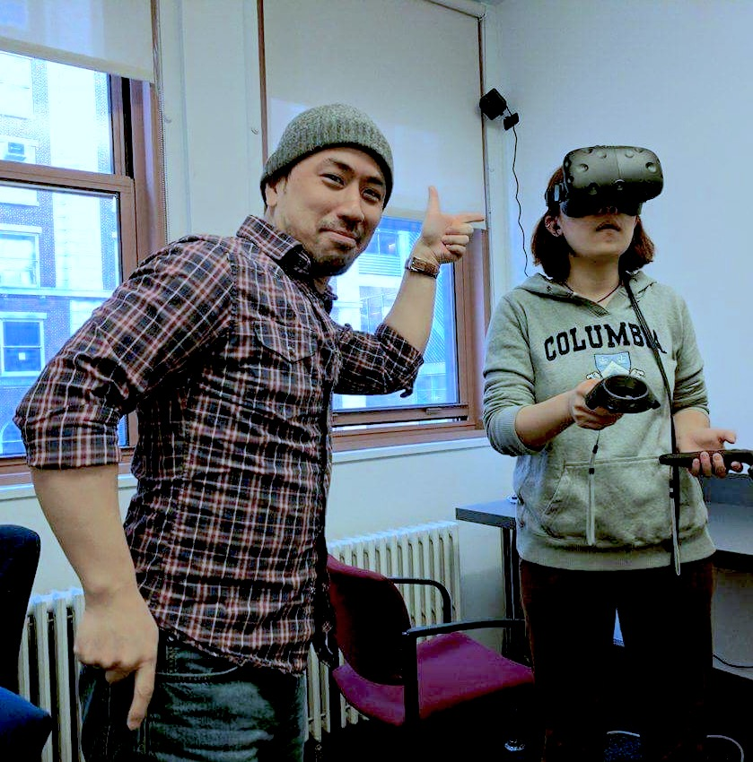
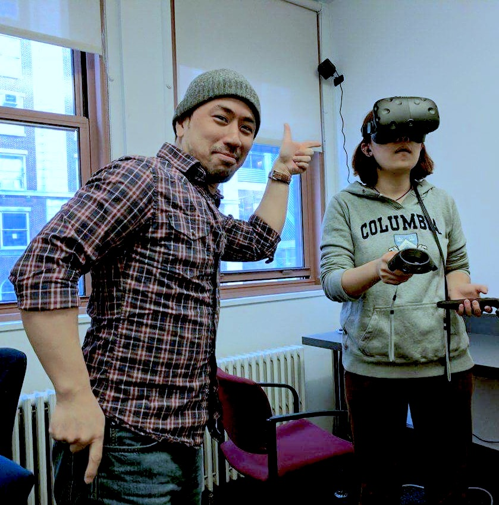

Evaluation
How are teams and ideas evaluated?
Problems and projects will be wide-ranging. The following are five areas that will be considered.
| Category | Description |
|---|---|
| Innovation | Innovative quality of the problem, approach, and solution |
| Process | Evolution of the project based on feedback, documentation, and communication over the course of the program |
| Relevance | Significance of the addressed topic and problem |
| Research | Rationale based upon literature review and supporting research |
| Value | Potential impact and effectiveness of a solution |
These categories are not intended to be a definitive measure. Rather, they will be used as a guide to allow fairness and equity in the proceedings.
Projects will be evaluated by a panel of judges comprised of a range of disciplines and perspectives (e.g. TC and Columbia faculty members, Edtech entrepreneurs, venture capitalists, teachers, school administrators, members of the student senate.)